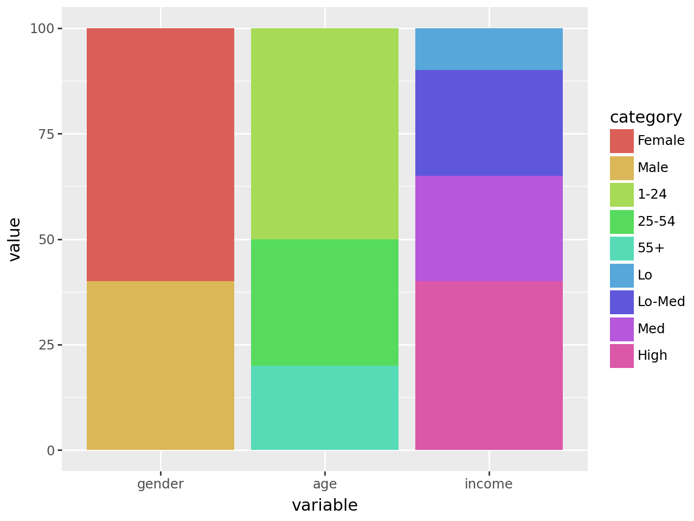
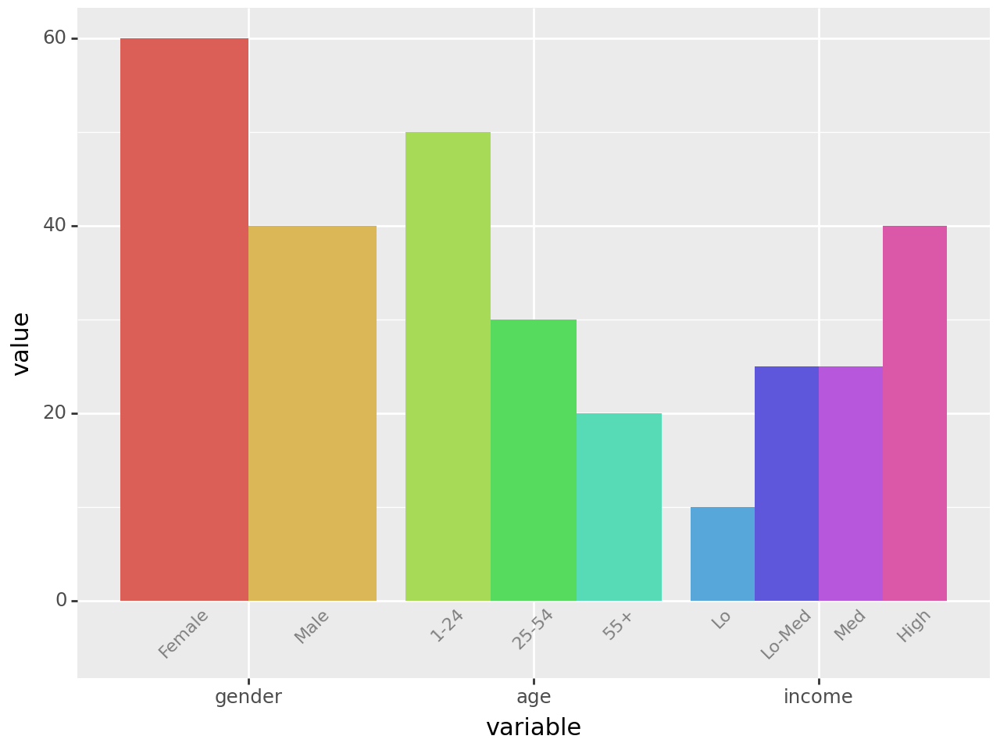
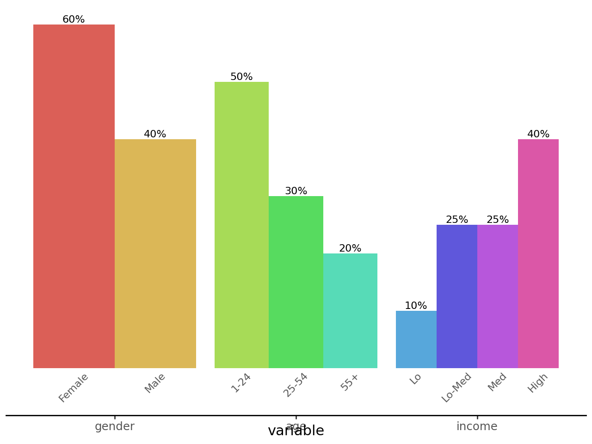

import pandas as pd
from plotnine import (
ggplot,
aes,
geom_col,
geom_text,
position_dodge,
lims,
theme,
element_text,
element_blank,
element_rect,
element_line,
)
geom_col(
mapping=None,
data=None,
*,
stat="identity",
position="stack",
na_rm=False,
inherit_aes=True,
show_legend=None,
raster=False,
width=None,
**kwargs
)Bar plot with base on the x-axis
This is an alternate version of that maps the height of bars to an existing variable in your data. If you want the height of the bar to represent a count of cases, use .
Parameters
mapping : aes = None-
Aesthetic mappings created with aes. If specified and
inherit_aes=True, it is combined with the default mapping for the plot. You must supply mapping if there is no plot mapping.Aesthetic Default value x y alpha 1color Nonefill '#595959'group linetype 'solid'size 0.5The bold aesthetics are required.
data : DataFrame = None-
The data to be displayed in this layer. If
None, the data from from theggplot()call is used. If specified, it overrides the data from theggplot()call. stat : str | stat = "identity"-
The statistical transformation to use on the data for this layer. If it is a string, it must be the registered and known to Plotnine.
position : str | position = "stack"-
Position adjustment. If it is a string, it must be registered and known to Plotnine.
na_rm : bool = False-
If
False, removes missing values with a warning. IfTruesilently removes missing values. inherit_aes : bool = True-
If
False, overrides the default aesthetics. show_legend : bool | dict = None-
Whether this layer should be included in the legends.
Nonethe default, includes any aesthetics that are mapped. If abool,Falsenever includes andTruealways includes. Adictcan be used to exclude specific aesthetis of the layer from showing in the legend. e.gshow_legend={'color': False}, any other aesthetic are included by default. raster : bool = False-
If
True, draw onto this layer a raster (bitmap) object even ifthe final image is in vector format. width : float = None-
Bar width. If
None, the width is set to90%of the resolution of the data. **kwargs : Any = {}-
Aesthetics or parameters used by the
stat.
See Also
Examples
Two Variable Bar Plot
Visualising on a single plot the values of a variable that has nested (and independent) variables
Create the data
df = pd.DataFrame(
{
"variable": [
"gender",
"gender",
"age",
"age",
"age",
"income",
"income",
"income",
"income",
],
"category": [
"Female",
"Male",
"1-24",
"25-54",
"55+",
"Lo",
"Lo-Med",
"Med",
"High",
],
"value": [60, 40, 50, 30, 20, 10, 25, 25, 40],
}
)
df["variable"] = pd.Categorical(df["variable"], categories=["gender", "age", "income"])
df["category"] = pd.Categorical(df["category"], categories=df["category"])
df| variable | category | value | |
|---|---|---|---|
| 0 | gender | Female | 60 |
| 1 | gender | Male | 40 |
| 2 | age | 1-24 | 50 |
| 3 | age | 25-54 | 30 |
| 4 | age | 55+ | 20 |
| 5 | income | Lo | 10 |
| 6 | income | Lo-Med | 25 |
| 7 | income | Med | 25 |
| 8 | income | High | 40 |
We want to visualise this data and at a galance get an idea to how the value breaks down along the categorys for the different variable. Note that each variable has different categorys.
First we make a simple plot with all this information and see what to draw from it.
(
ggplot(df, aes(x="variable", y="value", fill="category"))
+ geom_col()
)
All the values along each variable add up to 100, but stacked together the difference within and without the groups is not clear. The solution is to dodge the bars.
(
ggplot(df, aes(x="variable", y="value", fill="category"))
+ geom_col(stat="identity", position="dodge") # modified
) 
This is good, it gives us the plot we want but the legend is not great. Each variable has a different set of categorys, but the legend has them all clamped together. We cannot easily change the legend, but we can replicate it’s purpose by labelling the individual bars.
To do this, we create a geom_text with position_dodge(width=0.9) to match the ratio of the space taken up by each variable. If there was no spacing between the bars of different variables, we would have width=1.
A minor quack, when text extends beyond the limits we have to manually make space or it would get clipped. Therefore we adjust the bottom y limits.
dodge_text = position_dodge(width=0.9) # new
(
ggplot(df, aes(x="variable", y="value", fill="category"))
+ geom_col(stat="identity", position="dodge", show_legend=False) # modified
+ geom_text(
aes(y=-0.5, label="category"), # new
position=dodge_text,
color="gray",
size=8,
angle=45,
va="top",
)
+ lims(y=(-5, 60)) # new
)
Would it look too crowded if we add value labels on top of the bars?
dodge_text = position_dodge(width=0.9)
(
ggplot(df, aes(x="variable", y="value", fill="category"))
+ geom_col(stat="identity", position="dodge", show_legend=False)
+ geom_text(
aes(y=-0.5, label="category"),
position=dodge_text,
color="gray",
size=8,
angle=45,
va="top",
)
+ geom_text(
aes(label="value"), # new
position=dodge_text,
size=8,
va="bottom",
format_string="{}%",
)
+ lims(y=(-5, 60))
)
That looks okay. The values line up with the categorys because we used the same dodge parameters. For the final polish, we remove the y-axis, clear out the panel and make the variable and category labels have the same color.
dodge_text = position_dodge(width=0.9)
ccolor = "#555555"
# Gallery Plot
(
ggplot(df, aes(x="variable", y="value", fill="category"))
+ geom_col(stat="identity", position="dodge", show_legend=False)
+ geom_text(
aes(y=-0.5, label="category"),
position=dodge_text,
color=ccolor,
size=8,
angle=45,
va="top",
) # modified
+ geom_text(
aes(label="value"),
position=dodge_text,
size=8,
va="bottom",
format_string="{}%",
)
+ lims(y=(-5, 60))
+ theme(
panel_background=element_rect(fill="white"), # new
axis_title_y=element_blank(),
axis_line_x=element_line(color="black"),
axis_line_y=element_blank(),
axis_text_y=element_blank(),
axis_text_x=element_text(color=ccolor),
axis_ticks_major_y=element_blank(),
panel_grid=element_blank(),
panel_border=element_blank(),
)
)
Credit: I saved a plot this example is based on a while ago and forgot/misplaced the link to the source. The user considered it a minor coup.